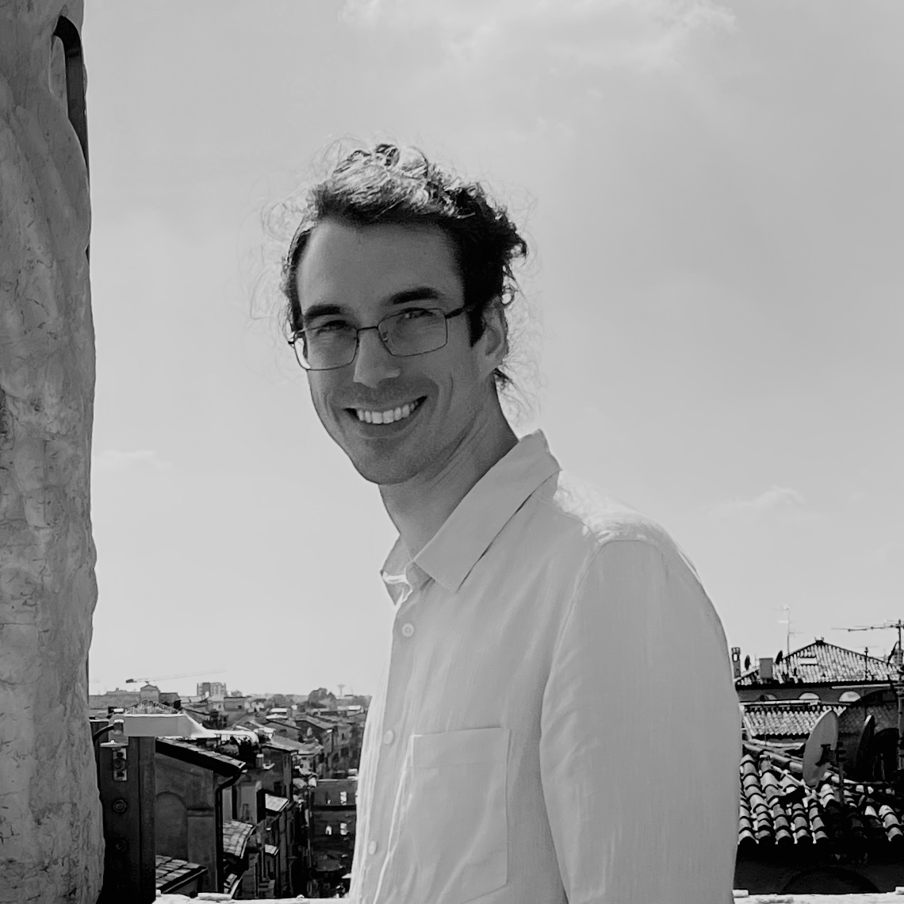

Home
All things are possible, perhaps nothing is certain, but some things are more likely than others.
I am a CNRS researcher at (Université Côte d’Azur, CNRS) based in Sophia Antipolis, and a member of the COATI Project-Team between INRIA and I3S .
 https://orcid.org/0000-0002-8755-3892
https://orcid.org/0000-0002-8755-3892About
Before accepting a CNRS position in 2018, I've been a fellow of the Simons Institute for the Theory of Computing in the Brain and Computation Program and a postdoctoral fellow at the Max Planck Institute for Informatics. In 2019, I've received the Best Italian Young Researcher in Theoretical Computer Science award by the Italian Chapter of the European Association of Theoretical Computer Science, from which I also received the Best PhD Thesis in Theoretical Computer Science in 2017. In 2016, I've been a recipient of the Best Student Paper Award at the European Symposium on Algorithms.
Research
I'm currently working on questions which fall at the interface between computational neuroscience and artificial neural networks. More recently, I've been learning the Julia programming language and I've become interested in the sub-area of scientific computing known as Scientific Machine Learning, with the goal of contributing to a more environmentally sustainable society through the means of computational modeling and simulation. Here I give a quick overview of my research.
Current group members
Pierluigi Crescenzi, visiting professor
Postdocs
Damien Rivet
PhD students
Aurora Rossi (co-advisor)
Arthur Carvalho Walraven Da Cunha (supervisor)
Francesco D'Amore (co-advisor)